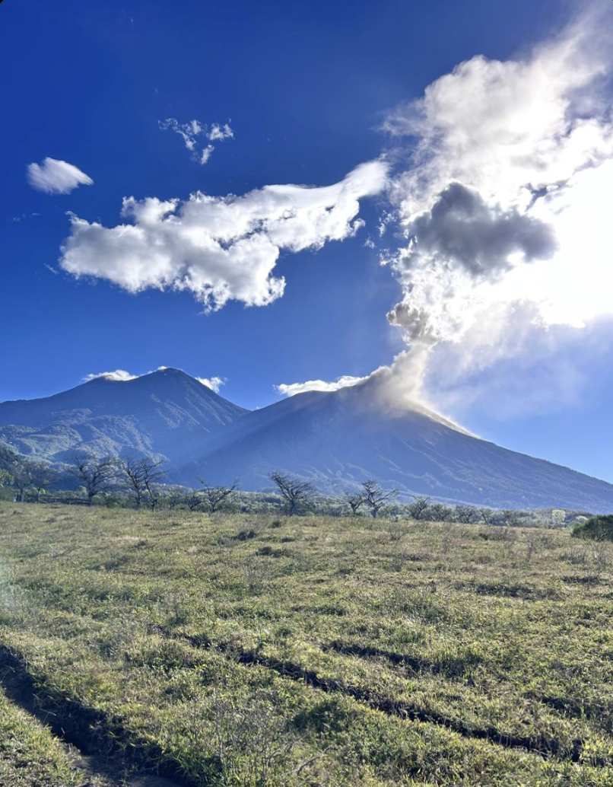
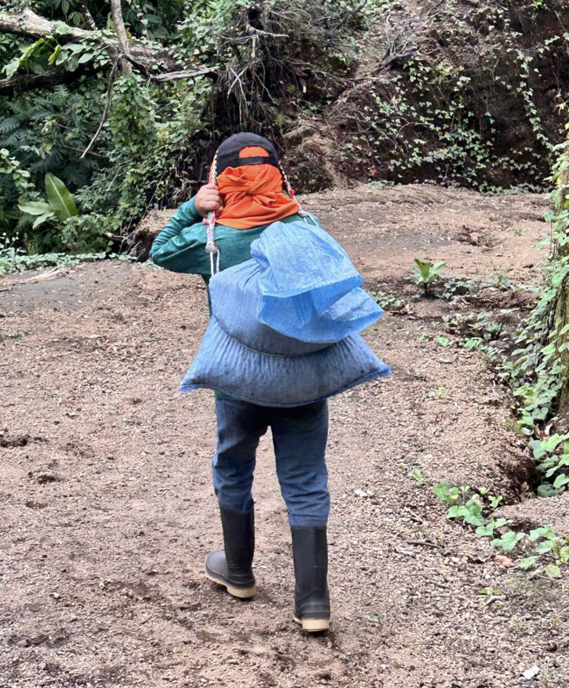
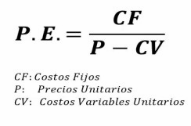

Misión
Transformar cada grano de café en elegancia y orgullo guatemalteco, tostando y sirviendo café de alta calidad para unir a las personas en experiencias que inspiran.
Emprendimiento escolar 2026 enfocado en café cultivado en San Pedro Yepocapa, con identidad local, elegancia guatemalteca y una experiencia complementada con mini pastelitos artesanales.
Café Valle de Miel busca convertir cada grano en una experiencia de orgullo guatemalteco, conectando la tradición cafetalera de San Pedro Yepocapa con una propuesta moderna y comercialmente viable.
Transformar cada grano de café en elegancia y orgullo guatemalteco, tostando y sirviendo café de alta calidad para unir a las personas en experiencias que inspiran.
Ser reconocidos como una marca que distribuye café de excelencia, con calidad, tradición y una conexión real con la riqueza de nuestras tierras.
El emprendimiento se desarrolla en San Pedro Yepocapa, una zona productora de café con alto consumo local y fuerte cultura cafetalera.


Los valores del documento de trabajo se convierten en la personalidad de la marca y en la base de sus decisiones.
Cada grano se trata con dedicación, desde la cosecha hasta el tostado.
La marca compite con elegancia en un mercado exigente.
La calidad se mantiene con esfuerzo constante y mejora continua.
Cada taza entrega lo que promete: confianza, aroma y calidad.
Respeto por clientes, colaboradores, comunidad y tierra cafetalera.
El proyecto combina un café de carácter volcánico con mini pastelitos artesanales, pensados para aumentar el valor de compra y crear una experiencia completa.
Café cultivado a 1,400 msnm en tierras volcánicas, con aroma intenso, sabor balanceado, notas dulces y acidez agradable.
Repostería artesanal en sabores como café, chocolate, vainilla y canela, creada para acompañar una buena taza.
El documento propone monitorear cada etapa de producción, asignar responsables, capacitar al personal y reducir desperdicios de materia prima.
El cultivo se desarrolla en tierras volcánicas, aprovechando el clima de montaña y la riqueza mineral del suelo.
La selección manual permite cuidar la calidad del grano y mantener la identidad artesanal del producto.

El lavado, secado, molienda y tostado se controlan con mantenimiento, registros y capacitación del personal.
La propuesta administrativa conecta producción, ventas y promoción para posicionar Café Valle de Miel en el mercado local.
Objetivo: comercializar el 100% de la producción durante el cuarto trimestre de 2026.
Objetivo: lograr que al menos el 50% de clientes agreguen mini pastelitos durante el primer trimestre de 2027.
La segunda fase confirma la aceptación del café, evalúa los mini pastelitos como complemento y define elementos clave para lanzar la marca: empaque, precio, puntos de venta y pruebas piloto.
Todos los encuestados consumen café regularmente y están dispuestos a probar una marca local.
La presentación molida es la opción más fuerte para el producto principal.
Fue el precio más elegido para una libra de café de alta calidad.
La mayoría muestra interés en café acompañado con mini pastelitos.

Las encuestas se realizaron en San Pedro Yepocapa a personas consumidoras de café, con enfoque en hábitos, presentación preferida, precio y disposición a probar una marca local.

Los mini pastelitos se validan como acompañamiento del café: el precio sugerido es Q8, el sabor más atractivo es fresa y el combo tiene buena aceptación.
Bolsa negra mate con logo dorado, pensada para comunicar café premium y proteger aroma y sabor.

Cajitas biodegradables de fibra de caña de azúcar, resistentes y personalizables.

Precio propuesto: Q80 por libra. Punto de equilibrio estimado: 38 unidades.

La evaluación destaca aroma excelente, sabor muy bueno, empaque atractivo y percepción premium.

El producto combina bien con café; se recomienda mejorar tamaño y seguir trabajando sabor.
San Pedro Yepocapa como punto matriz y Miraflores como segundo punto para posicionamiento premium.
Este video aporta un elemento humano y visual al emprendimiento: muestra el entorno, la identidad local y el tono artesanal que acompaña a Café Valle de Miel.
Solicitar presentaciónUsa el formulario para registrar consultas, pedidos o solicitudes de información para la presentación del proyecto.